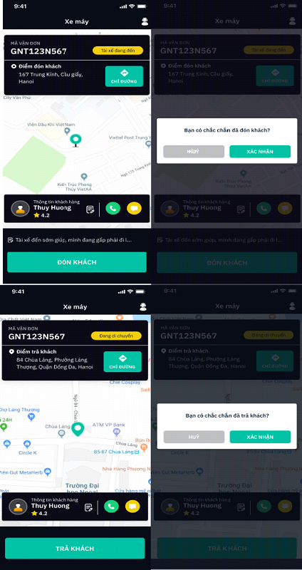

QUY CHẾ HOẠT ĐỘNG ỨNG DỤNG DI ĐỘNG CUNG CẤP DỊCH VỤ SÀN GIAO DỊCH THƯƠNG MẠI ĐIỆN TỬ MYGO
Nguyên tắc chung
- Ứng dụng MyGo là ứng dụng có chuyển mục mua bán trên đó cho phép người tham gia đăng tin sử dụng dịch vụ vận chuyển trong ngành giao thông vận tải và chuyển phát nhanh (“Dịch vụ”). Ứng dụng giúp kết nối giữa nhà cung cấp dịch vụ vận tải, chuyển phát nhanh và người có nhu cầu sử dụng dịch vụ vận tải, chuyển phát nhanh, bao gồm các loại hình:
- Loại hình Xe máy cung cấp dịch vụ kết nối và giao kết hợp đồng điện tử giữa hành khách và lái xe cho xe máy chở khách;
- Loại hình Giao hàng cung cấp dịch vụ kết nối và giao kết hợp đồng điện tử giữa Người tiêu dùng và lái xe giao hàng bằng xe máy;
- Loại hình Xe tải cung cấp dịch vụ kết nối giữa Người tiêu dùng và lái xe cho xe tải;
- Thành viên trên sàn giao dịch điện tử là các tổ chức, cá nhân có hoạt động thương mại hợp pháp được VTP chính thức công nhận và được phép sử dụng dịch vụ do Ứng dụng MyGo và các bên liên quan cung cấp.
- Quy chế này ban hành các quy định áp dụng bắt buộc cho các thành viên đăng ký sử dụng các dịch vụ do Ứng dụng MyGo cung cấp.
- Tổ chức, cá nhân tham gia giao dịch tại Ứng dụng MyGo tự do thỏa thuận trên cơ sở tôn trọng quyền và lợi ích hợp pháp của các bên tham gia cung ứng và sử dụng dịch vụ không trái với quy định của pháp luật.
- Hoạt động cung ứng và sử dụng dịch vụ qua Ứng dụng MyGo phải được thực hiện công khai, minh bạch, đảm bảo quyền lợi người tiêu dùng.
- Tất cả các nội dung trong bản Quy chế này tuân thủ theo hệ thống pháp luật hiện hành của Việt Thành viên khi tham gia, sử dụng Ứng dụng MyGo phải tự tìm hiểu trách nhiệm pháp lý của mình đối với luật pháp hiện hành của Việt Nam và cam kết thực hiện đúng những nội dung trong Quy chế hoạt động và các chính sách, quy định khác của Ứng dụng MyGo.
Quy định chung
- 1. Tên ứng dụng cung cấp dịch vụ sàn giao dịch thương mại điện tử (TMĐT): MyGo Địa chỉ tải ứng dụng trên chợ ứng dụng:
- App Store (cho hệ điều hành iOS): https://itunes.apple.com/us/app/viettel-truck/id1461645234?ls=1&mt=8
- Google Store (cho hệ điều hành Android): https://play.google.com/store/apps/details?id=com.viettelpost.vtgo&hl=en
- Giải thích từ ngữ:
- Ứng dụng MyGo | là ứng dụng cung cấp dịch vụ sàn giao dịch TMĐT trong lĩnh vực giao thông vận tải và chuyển phát, do Tổng Công ty Cổ Phần Bưu Chính Viettel (VTP) sở hữu và vận hành hoạt động;
- Người tiêu dùng | là tổ chức, cá nhân có nhu cầu sử dụng dịch vụ vận tải và/hoặc dịch vụ chuyển phát nhanh sử dụng Ứng dụng MyGo đăng thông báo về nhu cầu sử dụng dịch vụ vận tải và/hoặc dịch vụ chuyển phát nhanh để mua dịch vụ;
- Đối tác | là tổ chức, cá nhân (Nhà vận tải, Tài xế) cung cấp dịch vụ vận tải hoặc dịch vụ chuyển phát nhanh sử dụng Ứng dụng MyGo để kết nối với Người tiêu dùng;
- Thành viên | là tổ chức, cá nhân đăng ký sử dụng Ứng dụng MyGo, bao gồm cả Người tiêu dùng và Đối tác;
- Dịch vụ vận tải | là dịch vụ vận tải được giao dịch thông qua Ứng dụng MyGo;
- Sở hữu trí tuệ | bất kỳ bằng sáng chế, bản quyền, thiết kế được đăng ký hoặc chưa được đăng ký, quyền đối với thiết kế, nhãn hiệu được đăng ký hoặc chưa đăng ký, nhãn hiệu dịch vụ hoặc quyền sở hữu công nghiệp hoặc sở hữu trí tuệ khác và bao gồm các ứng dụng cho bất kỳ mục nào trong những mục trên.
Quy trình giao dịch
- Quy trình dành cho Người tiêu dùng:
Trước hết, Người tiêu dùng cần đăng ký mở tài khoản trên Ứng dụng MyGo theo quy trình sau:
- Tải và cài đặt Ứng dụng MyGo về điện thoại;
- Truy cập Ứng dụng MyGo;
- Đăng ký/ Đăng nhập;
Khi có nhu cầu đặt xe hoặc dịch vụ giao hàng ngay, Người tiêu dùng thực hiện các bước sau đây:
- Bước 1: Truy cập vào Ứng dụng MyGo trên thiết bị di động (xem Hình 1) Hình 1
- Bước 2: Chọn dịch vụ đơn hàng (xem Hình 2) Hình 2
- Bước 3: Nhập thông tin hành trình (Điểm đón, Điểm đến) để có được thông tin giá cước (xem Hình 3) Hình 3
- Bước 4: Người tiêu dùng nhập các thông tin cần thiết như ghi chú cho tài xế, thông tin người nhận (đối với dịch vụ vận chuyển hàng – Giao hàng) (xem Hình 4) Hình 4
- Bước 5: Người tiêu dùng xác nhận lệnh đặt xe hoặc dịch vụ vận chuyển hàng bằng cách ấn vào nút “đặt xe” (xem Hình 5) Hình 5
- Bước 6: Lệnh đặt xe hoặc dịch vụ vận chuyển hàng của Người tiêu dùng sẽ được chuyển đến đối tác tài xế gần nhất và tài xế sẽ di chuyển đến Điểm đón để đón Người tiêu dùng hoặc điểm nhận hàng vận chuyển (xem Hình 6) Hình 6
- Bước 7: Người tiêu dùng thực hiện thanh toán theo phương thức đã lựa chọn (bằng tiền mặt hoặc thẻ) sau khi kết thúc sử dụng dịch vụ
- Bước 8: Người tiêu dùng đánh giá dịch vụ và thắc mắc, khiếu nại Đối tác (nếu có, xem Hình 7) Hình 7
- Quy trình dành cho Đối tác:
- Để có thể sử dụng Ứng dụng MyGo để kết nối với Người tiêu dùng, trước hết Đối tác cần đăng ký tài khoản theo các quy trình sau:
+ Tải Ứng dụng MyGo Driver (Ứng dụng MyGo dành cho Đối tác) và điền thông tin đăng ký trực tuyến, sau đó Ban quản trị hệ thống của Ứng dụng sẽ liên hệ với Đối tác thủ tục cần thiết để hoàn thành hồ sơ tài xế.
+ Đối tác cũng có thể mang trực tiếp hồ sơ đến bưu cục của VTP gần nhất để đăng ký mà không cần qua bước đăng ký trực tuyến.
- Sau khi đã có tài khoản, Đối tác cần thực hiện các bước sau để giao dịch với Người tiêu dùng:
- Bước 1: Đăng nhập vào Ứng dụng MyGo Driver với số điện thoại đã được đăng ký (xem Hình 8) Hình 8
- Bước 2: Bật chế độ trực tuyến khi sẵn sàng được kết nối với Người tiêu dùng (xem Hình 9) Hình 9
- Bước 3: Khi nhận được lệnh đặt xe hoặc dịch vụ vận chuyển hàng từ Người tiêu dùng, bấm “Chấp nhận” để nhận cung cấp dịch vụ (xem Hình 10) Hình 10
- Bước 4: Thực hiện cung cấp dịch vụ cho Người tiêu dùng theo yêu cầu của Người tiêu dùng hiển thị trên Ứng dụng 
- Bước 5: Nhận thanh toán của Người tiêu dùng nếu Người tiêu dùng chọn phương thức thanh toán bằng tiền mặt (đối với dịch vụ vận chuyển hàng, đối tác nhận thanh toán sau khi nhận hàng từ người gửi, trong trường hợp phát sinh phí chuyển hoàn, Đối tác nhận thanh toán của Người tiêu dùng sau khi đã hoàn trả hàng thành công), sau đó Đối tác có thể đánh giá/góp ý Người tiêu dùng (xem Hình 12) Hình 12
- Để có thể sử dụng Ứng dụng MyGo để kết nối với Người tiêu dùng, trước hết Đối tác cần đăng ký tài khoản theo các quy trình sau:
- Quy trình giao kết hợp đồng điện tử:
- - Người tiêu dùng gửi lời mời đề nghị giao kết hợp đồng: Khi Người tiêu dùng nhập các thông tin về hành trình, màn hình hiển thị thông tin cơ bản của hợp đồng gồm hành trình: điểm đón (điểm nhận hàng), điểm đến (điểm giao hàng), độ dài hành trình; giá trị hợp đồng; phương thức thanh toán). Nếu Người tiêu dùng thấy chính xác và hợp lý thì ấn nút “Đặt xe” để gửi đi một đề nghị giao kết hợp đồng. Hệ thống sẽ tự động tìm tài xế phù hợp nhất.
- - Đối tác chấp nhận đề nghị giao kết hợp đồng: Lời mời đề nghị giao kết hợp đồng của Người tiêu dùng được hệ thống gửi đến Đối tác với đầy đủ các thông tin cơ bản của hợp đồng (hành trình: điểm đón, điểm đến, độ dài hành trình, giá trị hợp đồng, phương thức thanh toán). Đối tác chấp nhận đề nghị giao kết hợp đồng của Người tiêu dùng bằng cách bấm “Chấp nhận”.
Đối tác có thời gian tối đa là 60 giây để bấm vào “Chấp nhận”, nếu không bấm trong thời gian đó thì coi như là không chấp nhận giao kết hợp đồng.
- - Giao kết hợp đồng thành công: Khi Đối tác chấp nhận đề nghị giao kết hợp đồng, Ứng dụng sẽ hiện lên giao diện của Người tiêu dùng thông tin của Đối tác đã chấp nhận đề nghị giao kết hợp đồng.
- - Chấm dứt hợp đồng: Kết thúc chuyến đi, trên màn hình sẽ hiển thị số tiền mà Người tiêu dùng cần phải thanh toán và quãng đường đã di chuyển.
- Chính sách giao nhận vận chuyển:
Ứng dụng cung cấp dịch vụ thương mại điện tử nhằm kết nối giữa Đối tác (tài xế, …) và người tiêu dùng nên không sử dụng dịch vụ giao nhận, vận chuyển
- Chính sách hoàn trả hàng:
Đối tác sử dụng để kết nối với người tiêu dùng nhằm cung ứng dịch vụ vận tải hàng hóa, vận chuyển hành khách. Do đó, không có chính sách hoàn trả hàng đối với dịch vụ này.
- Chính sách bảo hành:
Đối tác sử dụng ứng dụng để kết nối với người tiêu dùng nhằm cung ứng dịch vụ vận tải hàng hóa, vận chuyển hành khách. Do đó, không có chính sách bảo hành đối với dịch vụ này.
Quy trình thanh toán
Người tiêu dùng và Đối tác có thể tham khảo các phương thức thanh toán sau đây và lựa chọn áp dụng phương thức phù hợp:
Cách 1: Thanh toán trực tiếp bằng tiền mặt cho Đối tác (áp dụng cho tất cả các loại hình MyGo)
- Đối với loại hình Xe máy
- Bước 1: Người tiêu dùng tìm hiểu thông tin về dịch vụ
- Bước 2: Người tiêu dùng chọn phương thức thanh toán bằng tiền mặt khi nhập thông tin về chuyến xe trước khi ấn nút “Đặt xe”
- Bước 3: Đối tác xác nhận cung cấp dịch vụ và cung cấp dịch vụ cho Người tiêu dùng
- Bước 4: Người tiêu dùng thanh toán sau khi chuyến đi kết thúc.
- Đối với loại hình Giao Hàng trả trước
- Bước 1: Người tiêu dùng tìm hiểu thông tin về dịch vụ
- Bước 2: Người tiêu dùng chọn phương thức thanh toán bằng tiền mặt khi nhập thông tin về chuyến xe trước khi ấn nút “Đặt xe”
- Bước 3: Đối tác xác nhận cung cấp dịch vụ và di chuyển đến điểm đón để gặp Người tiêu dùng
- Bước 4: Người tiêu dùng thực hiện thanh toán trước cước vận chuyển cho Đối tác và đưa hàng cho Đối tác để thực hiện chuyển phát
Trong trường hợp hoàn hàng (hàng giao không thành công), Người tiêu dùng khi nhận lại hàng phải thanh toán 80% cước vận chuyển ban đầu cho Đối tác
Cách 2: Thanh toán online qua thẻ thanh toán quốc tế
-
- Bước 1: Người tiêu dùng tìm hiểu thông tin về dịch vụ
- Bước 2: Người tiêu dùng nhập thông tin thẻ thanh toán quốc tế và chọn phương thức thanh toán bằng thẻ thanh toán quốc tế khi nhập thông tin về chuyến xe trước khi ấn nút “Đặt xe”
- Bước 3: Đối tác xác nhận cung cấp dịch vụ và cung cấp dịch vụ cho Người tiêu dùng
- Bước 4: Khoản thanh toán sẽ được thực hiện sau khi dịch vụ kết thúc
Quy trình giải quyết tranh chấp, khiếu nại
VTP và Đối tác có trách nhiệm tiếp nhận khiếu nại và hỗ trợ Người tiêu dùng liên quan đến dịch vụ vận tải và/hoặc dịch vụ chuyển phát được kết nối qua Ứng dụng MyGo. Các khiếu nại của Người tiêu dùng liên quan đến việc cung cấp, sử dụng Ứng dụng MyGo do VTP chịu trách nhiệm độc lập giải quyết trên cơ sở quy định của pháp luật, Điều khoản và Điều kiện sử dụng dịch vụ, Quy chế hoạt động và các quy định khác đã công bố với Thành viên.
Khi phát sinh tranh chấp, VTP đề cao giải pháp thương lượng, hòa giải giữa các bên nhằm duy trì sự tin cậy của thành viên vào chất lượng dịch vụ của Ứng dụng MyGo và Người tiêu dùng có thể thực hiện khiếu nại theo một hay đồng thời cả hai cách sau:
- Cách 1: Khiếu nại trực tiếp với Đối tác
Người mua có thể khiếu nại về dịch vụ của nhà cung cấp trực tiếp với nhà cung cấp. Trong trường hợp này, nhà cung cấp có trách nhiệm giải quyết khiếu nại và trả lời người mua.
- Cách 2: Khiếu nại với VTP
Người tiêu dùng có thể khiếu nại về dịch vụ của Đối tác với VTP theo quy trình sau:
- Bước 1: Người tiêu dùng phản hồi với VTP theo một trong các hình thức sau:
+ Gọi điện thoại đến số 19008095
+ Gửi thư điện tử đến địa chỉ email support@viettelpost.com.vn
+ Gửi khiếu nại từ ứng dụng MyGo ngay sau mỗi chuyến xe, và/hoặc các hình thức khác không trái quy định pháp luật
Thời hạn để VTP tiếp nhận khiếu nại là ba (03) tháng kể từ ngày sử dụng dịch vụ hoặc từ ngày phát sinh sự việc
- Bước 2: Trong vòng hai (02) ngày làm việc, kể từ khi nhận được khiếu nại, VTP sẽ kiểm tra, xác nhận thông tin về khiếu nại và thông báo cho các bên có liên quan. VTP cũng sẽ đồng thời tiến hành xác minh nội dung khiếu nại, xem xét và phân tích nguyên nhân dẫn đến khiếu nại, phạm vi khiếu nại và trách nhiệm xử lý để phối hợp với Đối tác đưa ra giải pháp xử lý phù hợp:
+ Trong vòng bảy (07) ngày làm việc kể từ khi nhận được thông báo của VTP về khiếu nại, Đối tác chủ động phối hợp với VTP để giải quyết, xử lý khiếu nại; chủ động thông báo cho người khiếu nại và VTP hoặc ủy quyền cho VTP thông báo tới người khiếu nại biện pháp giải quyết, xử lý khiếu nại.
- Bước 3: Trường hợp người khiếu nại không đồng ý với biện pháp giải quyết, xử lý của Đối tác, thì VTP có trách nhiệm chủ trì việc thương lượng, hòa giải giữa các bên để đưa ra biện pháp giải quyết, xử lý khiếu nại cuối cùng.
+ Trường hợp VTP và các bên đã nỗ lực giải quyết qua hình thức thương lượng, hòa giải mà vẫn không giải quyết được mâu thuẫn phát sinh từ giao dịch giữa Người tiêu dùng và Đối tác thì một trong hai bên Người tiêu dùng và Đối tác sẽ có thể đưa vụ việc đến cơ quan Nhà nước có thẩm quyền giải quyết nhằm đảm bảo lợi ích hợp pháp của các bên.
VTP tôn trọng và nghiêm túc thực hiện các quy định của pháp luật về bảo vệ quyền lợi của Người tiêu dùng. Vì vậy, đề nghị Đối tác nghiêm túc tuân thủ các quy định của pháp luật trong lĩnh vực giao thông vận tải, cũng như có những hành vi phù hợp đối với Người tiêu dùng. Bất cứ hành vi lừa đảo, gian lận trong kinh doanh đều bị lên án và phải chịu hoàn toàn trách nhiệm trước pháp luật.
Các bên bao gồm Đối tác và Người tiêu dùng có vai trò và trách nhiệm trong việc tích cực giải quyết vấn đề. Đối tác cần có trách nhiệm cung cấp văn bản, tài liệu, giấy tờ và các chứng cứ chứng minh khác để làm rõ thông tin liên quan đến sự việc Người tiêu dùng khiếu nại. VTP chỉ đóng vai trò phối hợp, hỗ trợ việc xử lý và giải quyết khiếu nại giữa Đối tác và Người tiêu dùng. Khi được yêu cầu, VTP sẽ cung cấp những thông tin liên quan đến Người tiêu dùng và Đối tác nếu được bên có liên quan đến tranh chấp hoặc cơ quan pháp luật có thẩm quyền yêu cầu.
Sau khi Đối tác và Người tiêu dùng đã giải quyết xong tranh chấp, khiếu nại, các bên có trách nhiệm thông báo lại cho VTP kết quả giải quyết. Trường hợp giao dịch phát sinh khiếu nại, tranh chấp mà được xác định lỗi thuộc về Đối tác thì VTP sẽ áp dụng các biện pháp xử lý vi phạm theo quy định của pháp luật đồng thời yêu cầu Đối tác bồi thường cho Người tiêu dùng thỏa đáng trên cơ sở thỏa thuận hoặc chuyển cho cơ quan nhà nước có thẩm quyền xử lý tùy theo mức độ của vi phạm.
- Bước 1: Người tiêu dùng phản hồi với VTP theo một trong các hình thức sau:
Đảm bảo an toàn giao dịch
Ban quản trị Ứng dụng MyGo đã áp dụng các biện pháp cần thiết để bảo vệ thông tin trên Ứng dụng MyGo (bao gồm thông tin của Đối tác, thông tin của Người tiêu dùng và các giao dịch được thực hiện qua Ứng dụng MyGo) và hạn chế tối đa rủi ro có thể phát sinh để đảm bảo các giao dịch được tiến hành thuận lợi và thành công.
Khi đăng ký sử dụng Ứng dụng MyGo để kết nối với Người tiêu dùng, Đối tác phải cung cấp cho VTP đầy đủ các thông tin cần thiết, bao gồm tên, địa chỉ, số điện thoại, địa chỉ thư điện tử, cùng với các giấy tờ chứng nhận tư cách pháp nhân/ cá nhân và chứng nhận đủ điều kiện cung cấp dịch vụ vận tải tương ứng. Đối tác chịu hoàn toàn trách nhiệm về thông tin đã cung cấp cho VTP và toàn bộ hoạt động kinh doanh của mình.
Tất cả các giao dịch của Người tiêu dùng và Đối tác sẽ được VTP đưa vào nội dung quản lý, thường xuyên cập nhật tình trạng và sẽ có đánh giá sơ bộ về uy tín của Đối tác.
Thành viên không nên cung cấp thông tin chi tiết về bản thân, cũng như chi tiết về việc thanh toán với bất kỳ bên thứ ba nào qua email, điện thoại hoặc hình thức liên lạc khác. VTP, các công ty liên kết, không chịu trách nhiệm về những thiệt hại hay rủi ro thành viên có thể gánh chịu trong việc trao đổi thông tin của thành viên qua các kênh liên lạc khác ngoài Ứng dụng MyGo.
Thành viên sử dụng Ứng dụng MyGo tuyệt đối không sử dụng bất kỳ chương trình, công cụ hay hình thức nào khác để can thiệp vào hệ thống hay làm thay đổi cấu trúc dữ liệu. Mọi hình thức phát tán, truyền bá hay cổ vũ cho bất kỳ hoạt động nào nhằm can thiệp, phá hoại hay xâm hại hệ thống của Ứng dụng MyGo đều bị nghiêm cấm. Mọi hành vi vi phạm sẽ bị xử lý theo Quy chế này và quy định của pháp luật.
Mọi thông tin giao dịch được bảo mật, trừ trường hợp cung cấp cho cơ quan pháp luật có thẩm quyền khi được yêu cầu.
Bảo vệ thông tin cá nhân Người tiêu dùng
- Phạm vi thu thập thông tin
- Trong quá trình Người tiêu dùng đăng ký tài khoản trên ứng dụng, Người tiêu dùng cần cung cấp các thông tin của Người tiêu dùng bao gồm: Tên Người tiêu dùng, số điện thoại, email. VTP sẽ thu thâp các thông tin này để cung cấp tài khoản cho Người Tiêu dùng sử dụng Dịch vụ.
- Trong quá trình sử dụng Ứng dụng, khi được sự đồng ý của Người tiêu dùng, VTP sẽ thu thập và xử lý các thông tin, dữ liệu kỹ thuật bao gồm:
- Thông tin vị trí, địa điểm đón và giao nhận của hàng hóa/ dịch vụ được yêu cầu.
- Các dữ liệu kỹ thuật như: đại chỉ IP, danh tính của thiết bị internet (ID), thông tin liên quan đế nhà sản xuất, kiểu mẫu và hệ điều hành của thiết bị mà Người tiêu dùng sử dụng để truy cập Ứng dụng.
- Trường hợp sử dụng dịch vụ Giao hàng, VTP sẽ yêu cầu các thông tin của người nhận như họ tên, số điện thoại, địa chỉ nhận hàng… để hoàn thành yêu cầu của Người tiêu dùng.
- Thông tin liên quan đến những giao dịch tiền điện tử được mà Người tiêu dùng thực hiện, bao gồm nhưng không giới hạn ở tên ngân hàng, tên của chủ tài khoản, số tài khoản và số lượng tiền được giao dịch thông qua hệ thống tiền điện tử.
- Mục đích và phạm vi sử dụng thông tin
- Mục đích sử dụng thông tin cá nhân
VTP sử dụng thông tin thu thập từ Đối tác hoặc do Đối tác cung cấp cho một số hoặc tất cả mục đích sau đây:
+ Tạo thuận lợi cho việc sử dụng Dịch vụ của các Người tiêu dùng
+ Xử lý các cuốc xe mà người tiêu dùng đã đặt trên Ứng dụng
+ Cập nhật cho Người tiêu dùng về thời gian đón khách, nhận hàng và vận chuyển của Đối tác
+ So sánh thông tin và xác minh với bên thứ ba để đảm bảo rằng thông tin là chính xác
+ Ngoài ra, VTP sẽ sử dụng thông tin Đối tác cung cấp để quản lý tài khoản của Đối tác (nếu có) đã tạo lập với chúng tôi để xác minh và thực hiện các giao dịch tài chính liên quan đến các khoản thanh toán trực tuyến của Đối tác; kiểm tra việc tải dữ liệu từ VTP; cải tiến bố cục và/hoặc nội dung của Ứng dụng và tuỳ chỉnh cho người dùng; xác định người tiêu dùng truy cập trên Ứng dụng; tiến hành nghiên cứu về nhân khẩu học và hành vi của người sử dụng; cung cấp cho người tiêu dùng các thông tin mà VTP cho rằng có thể hữu ích hoặc do Người tiêu dùng yêu cầu từ chúng tôi, bao gồm thông tin về dịch vụ của Đối tác, với điều kiện có cơ sở rằng người tiêu dùng không phản đối việc VTP liên lạc với những mục đích này
Để gửi cho Người tiêu dùng các tài liệu tiếp thị và/hoặc quảng cáo về dịch vụ Đối tác hoặc để gửi bản tin từ VTP và từ các công ty liên kết
Trong trường hợp ngoại lệ, VTP có thể bị yêu cầu tiết lộ thông tin cá nhân, chẳng hạn như khi có căn cứ cho rằng việc tiết lộ là cần thiết để ngăn ngừa mối đe dọa đến mạng sống hoặc sức khoẻ, hoặc vì mục đích thực thi pháp luật hoặc để đáp ứng các yêu cầu pháp lý và theo quy định khác
- Phạm vi sử dụng thông tin
Ứng dụng MyGo sử dụng thông tin của Người Tiêu Dùng cung cấp để.
+ Cung cấp các dịch vụ đến Người Tiêu Dùng
+ Gửi các thông báo về các hoạt động trao đổi thông tin giữa Người Tiêu Dùng và VTP
+ Ngăn ngừa các hoạt động phá hủy, chiếm đoạt tài khoản người dùng của Người Tiêu Dùng hoặc các hoạt động giả mạo Người Tiêu Dùng
+ Liên lạc và giải quyết khiếu nại với Người Tiêu Dùng.
+ Xác nhận và trao đổi thông tin về giao dịch của Người Tiêu Dùng tại Ứng dụng.
+ Cung cấp trong trường hợp có yêu cầu của cơ quan quản lý nhà nước có thẩm quyền.
- Thời gian lưu trữ thông tin
Trong mọi trường hợp, thông tin cá nhân của Người tiêu dùng sẽ được VTP lưu trữ an toàn, bảo mật trên máy chủ của VTP. VTP sẽ chỉ lưu giữ thông tin cho đến khi luật pháp yêu cầu hoặc phù hợp với mục đích thu thập thông tin. Ngoài ra, VTP cũng sẽ lưu trữ thông tin cho đến khi Người Tiêu Dùng có yêu cầu hủy bỏ hoặc Người Tiêu Dùng tự đăng nhập và thực hiện hủy bỏ.
- Những người hoặc tổ chức có thể được tiếp cận với thông tin cá nhân của Người tiêu dùng
Người tiêu dùng đồng ý rằng, trong trường hợp cần thiết, các cơ quan/ tổ chức/ cá nhân sau có quyền tiếp cận và thu thập các thông tin cá nhân của mình, bao gồm:
+ Ban quản trị Ứng dụng MyGo.
+ Bên thứ ba có dịch vụ tích hợp với Ứng dụng.
+ Công ty tổ chức sự kiện và nhà tài trợ.
+ Cơ quan nhà nước có thẩm quyền trong trường hợp có yêu cầu theo quy định tại quy chế hoạt động.
+ Công ty nghiên cứu thị trường.
+ Cố vấn tài chính, pháp lý và Công ty kiểm toán.
+ Bên khiếu nại chứng minh được hành vi vi phạm của Người Tiêu Dùng.
+ Theo yêu cầu của cơ quan nhà nước có thẩm quyền.
- Địa chỉ của đơn vị thu thập và quản lý thông tin
Tổng Công ty Cổ phần Bưu chính Viettel
Địa chỉ: Số 01 Giang Văn Minh, Phường Kim Mã, Ba Đình, Hà Nội.
E-mail: support@viettelpost.com.vn
Hotline: 19008095
- Phương thức và công cụ để Người tiêu dùng tiếp cận và chỉnh sửa dữ liệu cá nhân của mình trên hệ thống thương mại điện tử của đơn vị thu thập thông tin
- Người tiêu dùng có quyền tự kiểm tra, cập nhật, điều chỉnh hoặc hủy bỏ thông tin cá nhân của mình bằng cách đăng nhập vào Ứng dụng MyGo và chỉnh sửa thông tin cá nhân hoặc yêu cầu Ban quản trị thực hiện việc này
- Người tiêu dùng có quyền gửi khiếu nại về việc lộ thông tin cá nhân của mình cho bên thứ 3 đến Ban quản trị. Khi tiếp nhận những phản hồi này, VTP sẽ xác nhận lại thông tin, phải có trách nhiệm trả lời lý do và hướng dẫn Người tiêu dùng khôi phục và bảo mật lại thông tin.
Các hình thức tiếp nhận thông tin khiếu nại của Người tiêu dùng:
- Qua email: support@viettelpost.com.vn
- Qua điện thoại: 19008095
- Cam kết bảo mật thông tin cá nhân khách hàng
- Thông tin cá nhân của người dùng trên Ứng dụng được Ban quan trị Ứng dụng MyGo cam kết bảo mật tuyệt đối theo chính sách bảo vệ thông tin cá nhân của VTP. Việc thu thập và sử dụng thông tin của người dùng chỉ được thực hiện khi có sự đồng ý của người dùng trừ những trường hợp pháp luật có quy định khác.
- Không sử dụng, không chuyển giao, cung cấp hay tiết lộ cho bên thứ 3 nào về thông tin cá nhân của Người tiêu dùng khi không có sự cho phép đồng ý của Người tiêu dùng trừ những trường hợp pháp luật có quy định khác và quy định này.
- Trong trường hợp máy chủ lưu trữ thông tin bị hacker tấn công dẫn đến mất mát dữ liệu cá nhân của thành viên, VTP sẽ có trách nhiệm thông báo vụ việc cho cơ quan chức năng điều tra xử lý kịp thời và thông báo cho Người tiêu dùng được biết.
- Mục đích sử dụng thông tin cá nhân
Quản lý/ Kiểm soát thông tin trên ứng dụng
- Đối với Đối tác
- Đối tác sẽ tự chịu trách nhiệm về bảo mật và lưu giữ mọi hoạt động sử dụng dịch vụ dưới tên đăng ký, mật khẩu của mình. Đối tác có trách nhiệm thông báo kịp thời cho VTP về những hành vi sử dụng trái phép, lạm dụng, vi phạm bảo mật, lưu giữ tên đăng ký và mật khẩu của bên thứ ba để có biện pháp giải quyết phù hợp.
- Đối tác không sử dụng Ứng dụng MyGo vào những mục đích bất hợp pháp, không hợp lý, lừa đảo, đe doạ, thăm dò thông tin bất hợp pháp, phá hoại, tạo ra và phát tán virus gây hư hại tới hệ thống, cấu hình, truyền tải thông tin của Ứng dụng hay sử dụng Ứng dụng vào mục đích đầu cơ, lũng đoạn thị trường tạo những đơn đặt hàng, chào hàng giả, kể cả phục vụ cho việc phán đoán nhu cầu thị trường. Trong trường hợp vi phạm thì Đối tác phải chịu trách nhiệm về các hành vi của mình trước pháp luật.
- Đối tác không được thay đổi, chỉnh sửa, gán gép, sao chép, truyền bá, phân phối, cung cấp và tạo những công cụ tương tự dịch vụ kết nối do Ứng dụng cung cấp cho một bên thứ ba nếu không được sự đồng ý của VTP.
- Đối tác không được hành động gây mất uy tín của VTP dưới mọi hình thức như gây mất đoàn kết giữa các Đối tác bằng cách sử dụng tên đăng ký thứ hai, thông qua một bên thứ ba hoặc tuyên truyền, phổ biến những thông tin không có lợi cho uy tín của VTP và Ứng dụng.
- Đáp ứng các điều kiện trở thành Đối tác, bao gồm:
- Có khả năng sử dụng xe có động cơ phù hợp; có Giấy phép lái xe, Giấy phép kinh doanh dịch vụ vận tải thích hợp và hợp lệ; các giấy phép, chấp thuận, giấy chứng nhận hợp lệ khác; thoả mãn tất cả các điều kiện được yêu cầu bởi pháp luật để hoạt động cung cấp dịch vận chuyển hàng hoá, thức ăn, hành khách bằng xe có động cơ (theo luật và quy định hiện hành)
- Sở hữu xe có động cơ đáp ứng các yêu cầu theo quy định của pháp luật với sự an toàn và thoải mái khi chạy trên đường
- Có lý lịch cá nhân tốt và không có án tích
- Phải tuân thủ tất cả các quy tắc ứng xử do VTP ban hành, luật và quy định về giao thông hiện hành của Nhà nước
- Phải giữ gìn sự sạch sẽ, ăn mặc hợp lý, mang giày, mặc áo khoác, mũ bảo hiểm hoặc đồng phục khác do VTP cho mượn hoặc bán
- Không được sử dụng đồ uống có cồn, bị say rượu, sử dụng ma túy, hoặc ở trong trạng thái mà Đối tác không có ý thức đầy đủ trong quá trình cung ứng dịch vụ
- Không được thực hiện hành vi vô đạo đức, tấn công, xúc phạm, lừa dối hoặc đe dọa các bên thứ ba như Khách hàng, các đối tác khác hoặc các bên thứ ba khác
- Quản lý hàng hóa được phép tiếp nhận, vận chuyển
Đối tác cam kết chỉ tiếp nhận, vận chuyển hàng hóa hợp pháp, đáp ứng đầy đủ các điều kiện vận chuyển theo quy định của pháp luật hiện hành (Hóa đơn, chứng từ nguồn gốc xuất xử,…). Lưu ý một số hàng hóa không được phép tiếp nhận, vận chuyển như sau:
- Vận chuyển vũ khí, ma túy và hàng cấm khác theo quy định pháp luật
- Vận tải hàng hóa buôn lâu, không có chứng từ đi kèm,…
- Vận chuyển hàng hóa có điều kiện nhưng không đủ điều kiện vận chuyển
- Vận chuyển hàng hóa cồng kềnh, vượt quá kính thước cho phép theo quy định pháp luật giao thông
- Các trường hợp khác theo quy định pháp luật
- Quản lý Thông tin giới thiệu, quảng cáo dịch vụ trên Ứng dụng
Hành vi cấm trong hoạt động giới thiệu, quảng cáo dịch vụ trên Ứng dụng
- Quảng cáo thiếu thẩm mỹ, trái với truyền thống lịch sử, văn hóa, đạo đức, thuần phong mỹ tục Việt Nam.
- Quảng cáo xúc phạm uy tín, danh dự, nhân phẩm của tổ chức, cá nhân
- Quảng cáo có sử dụng hình ảnh, lời nói, chữ viết của cá nhân khi chưa được cá nhân đó đồng ý, trừ trường hợp được pháp luật cho phép
- Quảng cáo không đúng hoặc gây nhầm lẫn về khả năng kinh doanh, khả năng cung cấp dịch vụ của tổ chức, cá nhân kinh doanh dịch vụ; về số lượng, chất lượng, giá, công dụng, phương thức phục vụ của dịch vụ đã đăng ký hoặc đã được công bố
- Quảng cáo bằng việc sử dụng phương pháp so sánh trực tiếp về giá cả, chất lượng, hiệu quả sử dụng dịch vụ của mình với giá cả, chất lượng, hiệu quả sử dụng dịch vụ cùng loại của tổ chức, cá nhân khác
- Quảng cáo có nội dung cạnh tranh không lành mạnh theo quy định của pháp luật về cạnh tranh
- Quảng cáo vi phạm pháp luật về sở hữu trí tuệ
- Các hành vi khác vi phạm pháp luật về quảng cáo
- Các trương hợp khác theo quy định của pháp luật
- Cơ chế rà soát, kiểm soát thông tin về Dịch vụ của Ban quản trị Ứng dụng:
- Đối tác gửi thông tin về pháp nhân muốn đăng ký cung ứng dịch vụ vận tải, vận chuyển trên Ứng dụng. Sau khi tài khoản được xác thực, Đối tác mới có thể nhận các cuốc xe theo yêu cầu, đề nghị của Người tiêu dùng.
- Ban quản trị Ứng dụng sẽ toàn quyền loại bỏ các dịch vụ của Đối tác nếu dịch vụ đó vi phạm pháp luật, quy chế hoạt động, chính sách, quy định của VTP và áp dụng các hình thức xử phạt, yêu cầu bồi thường được nêu trong các chính sách, quy định của VTP và quy định của pháp luật.
- Các sản phẩm không phù hợp với chuyên mục quy định sẽ bị xóa hoặc Ban quản trị Ứng dụng sẽ chuyển sang chuyên mục khác cho là hợp lý.
- Ban quản trị Ứng dụng giữ quyền quyết định về việc lưu giữ hay loại bỏ dịch vụ được cung ứng thông qua Ứng dụng mà không cần báo trước
- Trường hợp thành viên (Người tiêu dùng, Đối tác) có hành vi vi phạm các điều kiện, quy định, quy trình, quy chế, quy tắc, điều khoản sử dụng của ứng dụng MyGo do VTP ban hành hoặc pháp luật quy định thì ngoài các chế tài nêu trên, VTP có quyền phạt thành viên một khoản tiền do VTP tự xác định.
Trách nhiệm trong trường hợp phát sinh lỗi kỹ thuật
- VTP cam kết nỗ lực đảm bảo sự an toàn và ổn định của toàn bộ hệ thống kỹ thuật. Tuy nhiên, trong trường hợp xảy ra sự cố do lỗi của VTP, VTP sẽ ngay lập tức áp dụng các biện pháp cần thiết để đảm bảo quyền lợi cho thành viên
- Khi thực hiện các giao dịch qua Ứng dụng MyGo, các thành viên phải thực hiện theo đúng các quy trình đã được hướng dẫn
- VTP cam kết cung cấp chất lượng dịch vụ tốt nhất cho các thành viên tham gia giao dịch. Trường hợp phát sinh lỗi kỹ thuật, lỗi phần mềm hoặc các lỗi khách quan khác dẫn đến việc thành viên không thể tham gia giao dịch được thì các thành viên cần thông báo cho VTP.
- VTP sẽ không chịu trách nhiệm giải quyết trong trường hợp thông báo của thành viên không đến được VTP, phát sinh từ lỗi kỹ thuật, lỗi đường truyền, lỗi phần mềm hoặc lỗi khác không phải do VTP gây ra.
Quyền và nghĩa vụ của Ban quản trị Ứng dụng MyGo
- Quyền:
- Yêu cầu thương nhân, tổ chức, cá nhân là Đối tác cung ứng dịch vụ trên Ứng dụng cung cấp thông tin theo quy định của pháp luật khi đăng ký sử dụng Ứng dụng
- Yêu cầu Đối tác cung ứng Dịch vụ vận chuyển hành khách và vận tải hàng hóa có điều kiện phải cung cấp Giấy chứng nhận đủ điều kiện kinh doanh đối với dịch vụ đó (trong trường hợp pháp luật quy định phải có Giấy chứng nhận đủ điều kiện kinh doanh).
- Tiến hành cung cấp các dịch vụ cho Đối tác sau khi đã hoàn thành các điều kiện, thủ tục mà Ứng dụng nêu ra
- Có quyền kiểm tra thông tin của các tổ chức, cá nhân đưa lên Ứng dụng, đặc biệt là thông tin về giá cả và chất lượng dịch vụ
- Từ chối, tạm ngừng hoặc chấm dứt quyền sử dụng dịch vụ của Đối tác trong trường hợp có cơ sở chứng minh Đối tác cung cấp thông tin cho Ban quản trị Ứng dụng không chính xác, không đầy đủ, vi phạm pháp luật, đạo đức, thuần phong mỹ tục Việt Nam
- Chấm dứt quyền Đối tác và quyền sử dụng một hoặc tất cả các dịch vụ của Đối tác trong trường hợp Đối tác vi phạm các Quy chế của Ứng dụng hoặc có những hành vi ảnh hưởng đến hoạt động kinh doanh trên Ứng dụng;
- Xem xét việc chấm dứt quyền sử dụng Ứng dụng và quyền Đối tác của Đối tác nếu Đối tác không tham gia hoạt động giao dịch và trao đổi thông tin trên Ứng dụng liên tục trong ba (03) tháng. Để tiếp tục trở thành Đối tác và được cấp lại quyền sử dụng Ứng dụng thì phải đăng ký lại từ đầu theo mẫu và thủ tục của Ứng dụng;
- Có thể chấm dứt ngay quyền sử dụng Ứng dụng và quyền Đối tác của Đối tác nếu Ban quản trị Ứng dụng phát hiện Đối tác đã phá sản, bị kết án hoặc đang trong thời gian thụ án, trong trường hợp Đối tác tiếp tục hoạt động có thể gây cho Ban quản trị Ứng dụng trách nhiệm pháp lý, có những hoạt động lừa đảo, giả mạo, gây rối loạn thị trường, gây mất đoàn kết đối với các Đối tác khác của VTP, hoạt động vi phạm pháp luật hiện hành của Việt Nam. Trong trường hợp chấm dứt quyền Đối tác và quyền sử dụng dịch vụ thì tất cả các chứng nhận, các quyền của Đối tác được cấp sẽ mặc nhiên hết giá trị và bị chấm dứt;
- VTP giữ bản quyền đối với Ứng dụng và các nội dung trên Ứng dụng theo các quy định pháp luật về bảo hộ sở hữu trí tuệ tại Việt Nam. “Ứng dụng MyGo” và tất cả các biểu tượng, logo, nội dung theo các ngôn ngữ khác nhau đều thuộc quyền sở hữu của VTP. Nghiêm cấm mọi hành vi sao chép, sử dụng và phổ biến bất hợp pháp các quyền sở hữu trên;
- Giữ quyền được thay đổi bảng, biểu giá dịch vụ và phương thức thanh toán trong thời gian cung cấp Ứng dụng cho Đối tác theo nhu cầu và điều kiện khả năng của Ứng dụng;
- Loại bỏ những thông tin cung ứng dịch vụ thuộc danh mục dịch vụ cấm, hạn chế kinh doanh theo quy định của pháp luật.
- Nghĩa vụ:
- Đăng ký thiết lập Ứng dụng theo quy định của pháp luật và công bố các thông tin đã đăng ký.
- Xây dựng và công bố công khai trên Ứng dụng quy chế hoạt động của Ứng dụng;
- Thẩm tra và xác thực thông tin của Đối tác đăng ký tham gia cung ứng dịch vụ trên Ứng dụng;
- Áp dụng các biện pháp cần thiết để đảm bảo an toàn thông tin liên quan đến bí mật kinh doanh của Đối tác. Không được tiết lộ, chuyển nhượng, cho thuê hoặc bán các thông tin liên quan đến bí mật kinh doanh hoặc thông tin cá nhân của người tiêu dùng khi chưa được sự đồng ý của các bên liên quan, trừ trường hợp pháp luật có quy định khác;
- Có cơ chế kiểm tra, giám sát, phản ánh các hành vi kinh doanh vi phạm pháp luật và cơ chế giải quyết tranh chấp phát sinh trong quá trình giao dịch trên sàn TMĐT
Quyền và nghĩa vụ của thành viên tham gia ứng dụng MyGo
- Quyền và nghĩa vụ của Đối tác (Nhà vận tải, Tài xế…) trên ứng dụng
- Quyền
- Sau khi ký hợp đồng, Đối tác sẽ được tạo một tài khoản để công bố thông tin, đăng tin cung ứng và quản lý thông tin dịch vụ.
- Đối tác được hỗ trợ đào tạo những kỹ năng cần thiết để quản lý tài khoản và các đơn hàng trên dịch vụ cung ứng thông qua Ứng dụng. Đối tác có thể liên hệ đến bộ phận chăm sóc khách hàng qua email hoặc số tổng đài để được hỗ trợ.
- Đối tác được thực hiện các chương trình khuyến mại, hưởng các chính sách ưu đãi do ban quản trị Ứng dụng đề ra trong quá trình hoạt động theo thỏa thuận/hợp đồng đã ký kết.
Nghĩa vụ:
- Đối tác phải cung cấp đầy đủ và chính xác thông tin về pháp lý khi gửi đăng ký tài khoản trên cho Ứng dụng.
- Đối tác phải cung cấp thông tin về dịch vụ, phương tiện cung ứng dịch vụ, bằng lái xe cho Ban quản trị Ứng dụng, cung ứng dịch vụ đảm bảo chất lượng, phù hợp với đăng ký kinh doanh và đúng quy định pháp luật.
- Đối tác có trách nhiệm niêm yết chính xác về chất lượng, số lượng, giá và các chính sách khác của dịch vụ cung cấp.
- Đối tác phải giữ gìn sự sạch sẽ, ăn mặc hợp lý, mang giày, mặc áo khoác đồng phục và mũ bảo hiểm cũng như giữ gìn cẩn thận áo khoác và mũ bảo hiểm được cung cấp;
- Không được sử dụng đồ uống có cồn, sử dụng ma túy hoặc ở trong trạng tháo mà Đối tác không có ý thức đầy đủ để cung ứng Dịch vụ;
- Không được thực hiện hành vi vô đạo đức, tấn công, xúc phạm, lừa dối hoặc đe dọa Người tiêu dùng, các đối tác khác hoặc các bên thứ ba khác;
- Đối tác không được yêu cầu thêm tiền bằng bất cứ cách nào, bao gồm nhưng không giới hạn khoản tiền thưởng từ Người tiêu dùng khác với giá hoặc phí dịch vụ do Đối tác cung cấp, được tính thông qua Ứng Dụng;
- Đối tác phải phối hợp với Ban quản trị Ứng dụng giải quyết những vấn đề tranh chấp giữa Người tiêu dùng với Đối tác về chất lượng sản phẩm, dịch vụ. Đối tác có nghĩa vụ phải bồi thường những thiệt hại của gây ra cho Người tiêu dùng khi lỗi được xác định thuộc về Đối tác.
- Đối tác cam kết, đồng ý không sử dụng dịch vụ của Ứng dụng vào những mục đích bất hợp pháp, không hợp lý, lừa đảo, đe doạ, thăm rò thông tin bất hợp pháp, phá hoại, tạo ra và phát tán virus gây hư hại tới hệ thống, cấu hình, truyền tải thông tin của Ứng dụng hay sử dụng dịch vụ của mình vào mục đích đầu cơ, lũng đoạn thị trường. Trong trường hợp vi phạm thì Đối tác phải chịu trách nhiệm về các hành vi của mình trước pháp luật.
- Đối tác cam kết không được thay đổi, chỉnh sửa, sao chép, truyền bá, phân phối, cung cấp và tạo những công cụ tương tự của dịch vụ do Ứng dụng cung cấp cho một bên thứ ba nếu không được sự đồng ý của Ban quản trị Ứng dụng.Ứng dụng.
- Đối tác không được hành động gây mất uy tín cho Ứng dụng dưới mọi hình thức như gây mất đoàn kết giữa các Đối tác bằng cách sử dụng tên đăng ký thứ hai, thông qua một bên thứ ba hoặc tuyên truyền, phổ biến những thông tin không có lợi cho uy tín, thương hiệu của Ứng dụng.
- Tuân thủ quy định của pháp luật về thanh toán, quảng cáo, khuyến mại, bảo vệ quyền sở hữu trí tuệ, bảo vệ quyền lợi Người tiêu dùng và các quy định của pháp luật có liên quan khác khi cung ứng dịch vụ trên Ứng dụng.
- Quyền và nghĩa vụ của Người tiêu dùng (Khách hàng, hành khách, người sử dụng dịch vụ…) trên ứng dụng:
- Quyền
- Khi đăng ký trở thành Người tiêu dùng của Ứng dụng MyGo và được Ban quản trị Ứng dụng đồng ý, Người tiêu dùng sẽ được sử dụng dịch vụ vận tải, vận chuyển của Đối tác được kết nối bởi Ứng dụng của VTP.
- Người tiêu dùng sẽ được cấp một tên đăng ký và mật khẩu riêng để được vào sử dụng trong việc quản lý các cuốc xe, dịch vụ vận tải mà mình đã sử dụng.
- Người tiêu dùng sẽ được hướng dẫn sử dụng được các công cụ, các tính năng phục vụ cho việc sử dụng các dịch vụ tiện ích trên Ứng dụng.
- Người tiêu dùng Đối tác có quyền đóng góp ý kiến cho Ứng dụng trong quá trình hoạt động. Các kiến nghị được gửi trực tiếp bằng thư, fax hoặc email đến cho Ứng dụng
- Nghĩa vụ
- Người tiêu dùng sẽ tự chịu trách nhiệm về bảo mật và lưu giữ và mọi hoạt động sử dụng dịch vụ dưới tên đăng ký, mật khẩu và hộp thư điện tử của mình.
- Người tiêu dùng có trách nhiệm thông báo kịp thời cho Ban quản trị Ứng dụng về những hành vi sử dụng trái phép, lạm dụng, vi phạm bảo mật, lưu giữ tên đăng ký và mật khẩu của mình để hai bên cùng hợp tác xử lý.
- Người tiêu dùng cam kết những thông tin cung cấp cho Ứng dụng là chính xác.
- Người tiêu dùng có trách nhiệm cung cấp thông tin về giao dịch , sản phẩm hỗ trợ Ứng dụng trong việc giải quyết tranh chấp phát sinh giữa Đối tác và Người tiêu dùng diễn ra được kết nối bởi Ứng dụng.
- Người tiêu dùng cam kết, đồng ý không sử dụng dịch vụ của Ứng dụng vào những mục đích bất hợp pháp, không hợp lý, lừa đảo, đe doạ, thăm dò thông tin bất hợp pháp, phá hoại, tạo ra và phát tán virus gây hư hại tới hệ thống, cấu hình, truyền tải thông tin của Ứng dụng hay sử dụng dịch vụ của mình vào mục đích đầu cơ, lũng đoạn thị trường tạo những đơn đặt hàng, kể cả phục vụ cho việc phán đoán nhu cầu thị trường.
- Trong trường hợp vi phạm thì Người tiêu dùng phải chịu trách nhiệm về các hành vi của mình trước pháp luật.
- Người tiêu dùng cam kết không được thay đổi, chỉnh sửa, sao chép, truyền bá, phân phối, cung cấp và tạo những công cụ tương tự của dịch vụ do Ứng dụng cung cấp cho một bên thứ ba nếu không được sự đồng ý của Ban quản trị Ứng dụng trong Quy định này.
- Người tiêu dùng không được hành động gây mất uy tín, thương hiệu của Ứng dụng dưới mọi hình thức như gây mất đoàn kết giữa các Người tiêu dùng bằng cách sử dụng tên đăng ký thứ hai, thông qua một bên thứ ba hoặc tuyên truyền, phổ biến những thông tin không có lợi cho uy tín, thương hiệu của Ứng dụng
Điều khoản áp dụng
Quy chế hoạt động ứng dụng di động cung cấp dịch vụ sàn giao dịch thương mại điện tử MyGo chính thức có hiệu lực thi hành sau 5 ngày kể từ ngày công bố, thông báo cho các thành viên.
Ban quản trị Ứng dụng MyGo bảo lưu quyền sửa đổi, bổ sung nhằm hoàn thiện đối với Quy chế hoạt động này và sẽ thông báo cho tất cả các đối tượng sự dụng Ứng dụng MyGo ít nhất 5 ngày trược khi áp dụng những thay đổi đó. Việc thành viên tiếp tục sử dụng dịch vụ do Ứng dụng cung cấp sau khi Quy chế sửa đổi được công bố và có hiệu lực đồng nghĩa với việc thành viên đã chấp nhận Quy chế sửa đổi đó
Điều khoản cam kết
Mọi thành viên khi sử dụng Ứng dụng MyGo để thực hiện cung ứng và sử dụng dịch vụ vận tải, chuyển phát có nghĩa là thành viên đó đã đọc, hiểu và chấp thuận tuân theo Quy chế này
Mọi thắc mắc của thành viên xin vui lòng liên hệ địa chỉ liên lạc chính thức của Ứng dụng MyGo theo thông tin dưới đây để giải đáp
Tổng Công ty Cổ Phần Bưu Chính Viettel
Địa chỉ: Tòa nhà N1, Đại Lộ Thăng Long, Quận Nam Từ Liêm, Hà nội
Điện thoại: 19008095
Email: support@viettelpost.com.vn